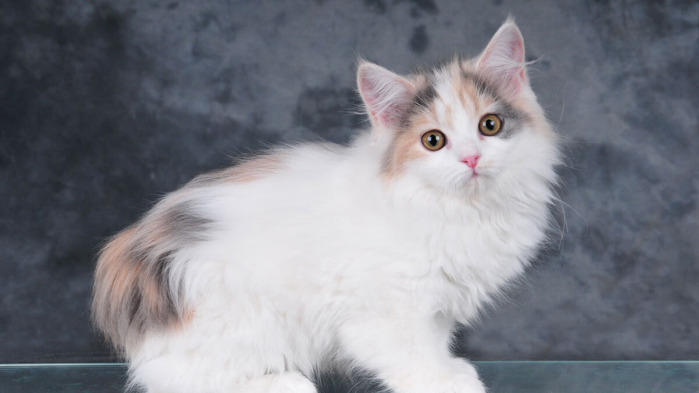

Cómo podés ayudar
Tu ayuda puede cambiar una vida
Sumate a la causa
Existen muchas formas de ayudar a los animales que más lo necesitan. Cada aporte, por pequeño que sea, nos permite seguir rescatando, cuidando y encontrando hogares responsables para ellos.

❤️ Adoptá
Darle un hogar a un animal rescatado es darle una nueva oportunidad de vida llena de amor y cuidados.
Más información
🏠 Transitá
Ofrecé un hogar temporal mientras el animal se recupera y encuentra una familia definitiva.
Quiero transitar
🥣 Doná
Podés colaborar con alimento, medicamentos, mantas o aportes económicos para los rescates.
Donar ahoraHistorias de quienes ya ayudaron
“Adoptar a través de Proyecto Huellitas fue una experiencia hermosa. Me acompañaron en todo el proceso y hoy tengo un compañero lleno de amor.”
- Martina, adoptante
“Transitar a un animal rescatado me enseñó muchísimo. Saber que ayudé a que encontrara una familia definitiva fue muy emocionante.”
- Lucas, hogar de tránsito
“Empecé colaborando con alimento y mantas. Me encanta saber que cada pequeño aporte ayuda a mejorar la vida de muchos animales.”